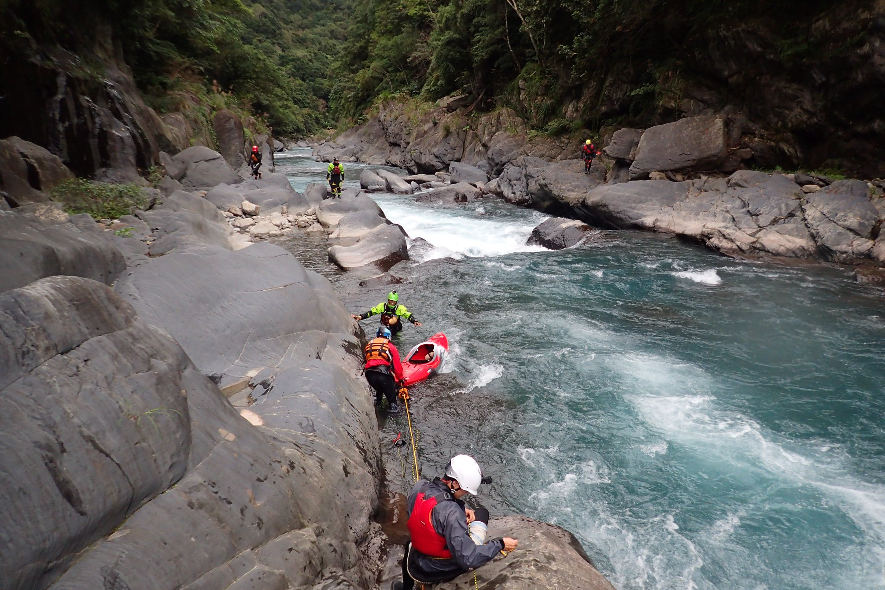

三潭三瀑流餌 × 第二崩塌我就說嘛
激流慢慢來之歡樂戲外戲
這場 2018 年南勢溪下航，是精實又值得探討的救援演練日，大師兄用心良苦，不只在三潭三瀑犧牲，第二崩塌怕大夥玩不夠，抽中再來一次，讓我們從中挖掘待改進之處。過去討論多在閒聊中進行，未完整寫下來公審，幾年過去後，坐下來把相關資訊補一補，免得只在茶餘飯後浮出水面。

三潭三瀑，立德拍攝。歡樂約划
按照慣例，星期三晚，流團多次的大師兄仍不放棄，在社團貼約團文，找大家去南勢溪。
大師兄：
本周末週六……天氣還好……
持續約划南勢溪福山段……皮特： +1 來吧
文淵： +1 週五回台灣 哈哈
世堅： 小水+1
立德： +1
英彥： +大師兄： 0830內洞集合
孟宇： 我也加1
博文： +1
皮特： 大濕胸終於約成功了，回應好熱絡！大師兄： 預報氣溫 20-24，水溫應該只有20度！…… 可以約併車就相約愛護地球！
🎉灑花成行！🎉
- 南勢溪 Nanshi River
- 起點：福山 (集水區162平方公里 / 高345m)
- 終點：內洞 (集水區208平方公里 / 高213m)
- 日期：2018-11-17 （週六）
- 天氣：多雲轉細雨 （如影片）
- 水位：382.82m 福山
- 流量：16.90m³/s 福山
- 演出地點：三潭三瀑、第二崩塌
- 演員：
- 英彥 (Soul Booty Call)
- 立德 (Dagger Nomad 8.1)
- 文淵 (WaveSport Diesel 65)
- 皮特 (Necky Orbit Fish)
- 孟宇 (Jackson Villain)
- 世堅 (Dagger Nomad 8.1)
- 博文 (Jackson Villain S)
- 大師兄 (Pyranha Burn Ⅲ S)
- 狀態：
- 人員均安
- 器材無傷
- 驚嚇多回
- 只有大師兄玩得最開心
快轉 ⏩⏩⏩
週六一早驅車前往烏來，畢竟是週末，難免被烏龜車塞住，耐著性子慢慢開。八點半，眾舟友先後抵達終點停車處集合，整裝併車時，自然少不了開划前的嘴砲時光。一番閒聊後挖醒愜意的週末晨間氛圍，八人大軍駛往下水點福山，好不熱鬧。皮特自述是回台後首次參加這麼多人的下溪行程；若沒記錯，這也是我第二回划福山段。
隊伍士氣高昂。
福山段相對階梯段來說，以相對輕鬆的節奏開場，從二級的水流開始逐步暖身，順水行舟，經過幾段暖身剛好的落差後，宜人的溪谷景緻慢慢地引領眾人到前往三潭三瀑前的崩塌。
三潭三瀑
這算哪門子活餌？ 大師兄游泳番外篇
一如往常，離左彎100公尺前，抬頭可見曲流左彎處的右岸的崩壁，斜坡後向左划去靠岸。帶著船走至崩塌正對面，自上而下俯瞰整段水道，面對漂亮的水色搖搖頭，沒有人猶豫，陸續自巨岩後方，下攀通過不宜航行的第一崩塌段，遞船而下，泊於水岸，人員續沿溪下行勘查，前行至三潭三瀑末端守門員旁，依序觀察整段地貌與航行路線。河道主流清晰，可分階段一路下航抵最後落差，中央石塊下方岩縫有水流竄出，顯然是該避免的危險地帶。中央石上方些許，有石縫張著血拼大口等着人，看來取左道，並翹頭拉桿（boofing）由翻滾流邊緣出口借力離開，或許是最佳解？
這時輪到大師兄，駕著愛船食人魚赤燃叁小（Pyranha Burn Ⅲ S），通過遠方的第一階時，大意碰及右岸石頭慘遭壓翻，復位後重整旗鼓，沿主流續行，第二落差中段稍取偏左切；本以為能過關斬將的路線計畫，或許是方才的翻船帶來額外心理壓力，身體划槳積極度降低，欲進中段尾端左回流環轉的動作稍顯遲疑，恰沒咬住主流，外加欠缺船速，立刻遭溪水反嗜。
英彥：「靠杯～」
眾人在左岸搖滾區看戲，英彥、世堅、文淵、孟宇、立德靠上游，皮特、博文靠下游。
轉眼間大師兄潛意識下拉平衡彌補，然已臨落差，頓時船體旋轉慣性消失，近乎失控邊緣，尚不及回正，連忙反掃槳補救，天不從人願，船頭卡到左岸岩石。沒得翹頭拉桿不說，眼看將以最差姿態側向沖下去洗刷，但薑還是老的辣，將計就計，逆勢操作改以船尾下航。
「尬～」
「吸住」
「沒事沒事」
帥氣的倒車下落差，被推到左側岩壁邊抵住失去重心，水流拖著船於白泡區之間漂移，頭一回翻滾沒抓到水，第二回翻滾下半身動作尚未啟動便放棄。
「幹！」
「拉水裙？」
或許是屁股掉出了座椅？主角在意料之外拉開水裙，眾人見狀也從看戲模式彈起警戒，有的準備拋繩，有的補位往下，有的準備下水，當然也有專注攝影做記錄珍貴畫面的攝影師，讓我們有機會重建當時全貌。
「拋繩拋繩」立德提醒友仁有人即將被吸。
「James！ James！」文淵大喊，並見大師兄浮起，即將向後被拖回 hole 裡，仍鎮定地扶着船，沒回頭看，情急之下，投出拋繩，準確落在胸口前旁，但未引起注意力，畢竟大師兄後腦沒長著眼睛。
「James！ 嘿！嘿！嘿！」
「繩子～」顯然大師兄沒抓著拋繩。
「活餌！活餌！」英彥喊著，皮特與他一前一後往下游移動向博文方向前進（重複看影片比對才注意到這對話，現場我完全沒聽見，不知是緊張還是水聲吵雜的緣故？）
「拉著！拉著！」
「幹」多麼希望能趕緊抓到繩
下游一米處，有東西浮上來，是剛剛拉水裙而脫手的槳，往下游推去，水流仍慵懶且無情地把人拖回 hole 翻滾一圈，頭盔引著人從沸騰區域彈出。
文淵手感似乎仍沒拉到重量，急著大喊：
「繩子！繩子！繩子！」用力左右搖擺浮水繩希望引起注意，畢竟浮出水面前在白泡中很難注意到繩子所在。
「繩子！繩子！」孟宇接著提醒
不一會兒，拋繩才連繫起救援者與待救者。也許因為船塞在翻滾流最內側，將人頂在 hole 外，苦主順水流由右側的出口離開。
「好！繩子抓著」立德說
「OK」
上半段好戲才剛結束，沒想到下半段的支線劇情才剛開始。博文、英彥先後往下游跑去末端。
這時博文已在近水好走區域末端，拿著拋繩袋作為無法靠岸的最後防線。英彥移動到稍上游幾公尺的位置，瞥見紅色 Powerhouse 槳順主流而下，逐漸逼近，連忙大喊，槳！槳！槳！。博文在心裡思量：救生衣有救援釋放帶沒錯，但沒裝牛尾巴，手上也沒多的勾環，沒人幫忙一時半刻間要裝上活餌撈裝備也不容易。
這時英彥走了過來，對博文說「跳！跳！跳！去救槳！」，示意活餌救援。
靠，要直接跳？博文心中掂掂環境，原來 222 大家都這麼猛。
回頭再檢查一次下游環境，只有一個小斜坡Ｖ流，週遭皆能靠岸，還可以。
「你有拋繩嗎？」 博文眼看時間差逼近撈槳極限。
「拋繩給你」把手上的拋繩袋小拋給英彥。向前跨兩步入水，想著待會游進回流上岸，若來得及直接抓英彥拋繩回來則是賺到。
回到主舞台旁，文淵吆喝 「來囉！小心唷」 讓立德與孟宇閃避擺盪進來的繩索。
「幹，他媽的，他直接下去唷？」文淵在瞄到下游處有黃色頭盔往主流移動游去。
「天啊！」
這時博文已游進主流，時間差剛好抓到槳，雙手持槳前游幾下向右岸回流靠去，舉起槳射向落差前右岸，把握時間轉身往左岸上游方向划手，抬頭看了一下英彥距離應該是來不及接拋繩，多補兩下划手對準V流中央，並於落差前轉防衛式。
「好。夠了，夠了，夠了」不知是世堅還是孟宇示意文淵拉繩，將大師兄擺進來。
「OK！」孟宇
「等一下，他要撿船」文淵提醒孟宇別拉繩
英彥、世堅先後朝下游博文方向追去，保持視線接觸。
「撿船，撿船」立德說著，又補了一句：「靠杯～」。或許這時才注意到博文不見了吧？
「船出來了，抓船」大師兄看著倒蓋的紅色船底，告知意圖，並在水中稍候幾秒，接到船尾順勢擺入左岸，
「好了，好了，回來了」文淵說，
「看一下博文」 文淵提醒前，英彥與世堅早已往下游追去，察看情況。
「居然被吸住了」 大師兄興奮地分享，
「你卡住了嗎？」 孟宇確認人船會不會繼續漂下去？
「來唷，等一下」
「你拉著，我下去，我下去」文淵把手上的繩遞給給孟宇，
「看一下博文怎麼樣？」 文淵再次強調
他通過V流往下，主流貼左岸邊緣有個迷你 eddy ，順勢轉身進去，有小手點可以搭著，在此稍稍停歇。
「嗶～～～」英彥吹哨吸引注意力。
聽見哨音朝上游望去，英彥大喊並指揮向右岸橫渡上岸，環顧對岸平坦淺灘，隨即腳蹬岩壁，斜切借水橫渡緩灘後步行上岸。
「James 你現在 OK 齁？」皮特說。
「可以，可以」大師兄答。
「你還有沒有繩子」文淵對一同與孟宇抓著繩的皮特問。
「在旁邊」皮特左手持續握著拋繩，拉住大師兄，右手從身旁拿起自己的拋繩袋，繞過左手上方遞給文淵。
「你就先穩在那邊」皮特看著一手握繩，一手抓船平漂在淺水灘上的大師兄。
「來 James 你等一下唷！」文淵說。
「敖嗚～」高聲一喊，緊接著鼓掌聲，不知是誰發出的歡呼叫好。可能是看到博文上岸了吧？
「另一端是那個……」皮特重新取出拋繩袋繩頭給文淵
「James 你等一下唷」文淵要大師兄先穩著。
「後面有平水啦」James 拉著剛翻正的船槳。
「你要下去嗎？」皮特確認。
「後面有平水啦」
「你要下去嗎？」
「來，我這邊拉你上來」文淵走下水邊，伸手接過船尾
「上得去嗎？」大師兄懷疑
「可以呀」
「靠，會吸人啊！」大師兄抱怨。「下面有平水啦」
文淵同步先幫忙倒水：「你要那邊上是不是？」
「來唷」大師兄已移動到平水回流處定位，
「等一下，我幫你拉繩，免得等一下掉了」 順勢將船的把手船掛上鉤環，
「來，給繩，給繩」
「推過來就好了」
「靠，好亂唷」
「幹，好恐怖唷！抬船抬船」文淵顯然不想划這一段了。
「好，可以放了」
「你等一下把這個解開」示意大師兄拆鉤環。
「來，再給再給」 文淵示意皮特給繩。
「可以放了，可以放了」 大師兄要船。
文淵把鉤環從船尾拆掉，把繩子丟回皮特身旁。
「有撿到（槳）嗎？」 大師兄好奇問，
「他用命去救你槳啦」 英彥虧。
「靠」 大師兄說，
「水太大了」 大師兄說；
「幹，博文拚了，哈！連活餌都沒有就直接衝了」文淵，
「靠杯」 英彥覺得這樣不行。
「控制不了，船都不聽話」 大師兄說，
「幹，這個。開個會，開個會」 英彥走回到大師兄附近，
「我被他嚇死了，活餌不是這樣啊，繩子」 抒發緊張的心情，
「我說：『博文你繩子給我，跳出去活餌，活餌！』，然後他把繩子丟給我，然後人跳出去，嚇死我了。不是這樣子的啦」 其他人在一旁誇張地笑，釋放剛才繃著的情緒。
「博文太勇了」孟宇開著玩笑，
「賣命演出」 世堅邊說邊走回大師兄身邊，
「休息一下，休息一下」 世堅拍拍。
沿著右岸走回落差前的博文，拾起先前投射上岸的 Werner 槳，隱約聽見對岸激動的對話，但水聲嘈雜，聽不清內容。
「我出來後被倒……」，
「你那邊被吸回去啊」 世堅補充，
「我倒著下沒法划。划不出來！」 大師兄嘆 「啊，博文怎麼辦？」，看著對岸繼續往上游移動的博文 。
隔著水聲感覺大家議論紛紛，不知在說什麼？
「尬，似欲尬人嚇死」 英彥繼續陳述，
「他丟你，他就跳了？」立德懷疑，
「對，我說。媽的！怎麼會這樣？嚇死我了」
博文在眾人的對岸繼續走向上游便於擺盪渡溪的起始位置。
文淵高聲向對岸詢問「你要過來嗎？」，
對岸以肢體語言回應，
「我丟給你，我丟給你」
「我怎麼會被吸回去呀？奇怪」，
「那邊水很捲啊，倒吸啊」世堅解釋，
「根本沒想到會被吸過去」大師兄還是沒搞清楚原因。
博文接到拋繩後聽見： 「抓好唷！」 順勢擺回左岸。
「你要進來唷！你要把他甩進」英彥提醒，
「好，我知道，甩進 eddy」文淵回應。
「一開始還好，你翻一翻把自己推進去了」 皮特說，
「幫他接一下」大師兄提醒世堅幫忙帶著槳的博文進來，接著說「好啦，我故意翻的啦，叫你們不要划」，
「沒有啊，你很不甘願」 ，立德很有意見： 「你最後那個倒著下，嚇死人了」，
「沒辦法，船轉不過來，撞到石頭」，
「撞到石頭來不及轉了」文淵補充，
「我以為你會大力一點，把石頭撞開。結果卻沒有」立德開啟最高功率的幹話模式，並補充：
「啊，真的不好下」。
「謝謝，謝謝」 大師兄接過世堅傳上來的槳，
「幹，嚇死人」 文淵嚷嚷。
「扛過來很累耶」 大師兄鼓勵其他人划，
「脫出最累吧？」 世堅這句話最實在。
這時博文也回到岸上，當全體整理裝備整理心情時，英彥趁機在現場，向博文說明與溝通表達慣用模式，博文回以 OK 手勢，告知了解。可惜錄音距離較遠，難以還原 100% 對話，印象中主要是兩項：
- 這該用活餌救援，不是人直接跳下去，
- 以及拋繩袋繩尾沒預先打好繩圈準備。
「為了槳不用冒生命危險」 大師兄遠遠地補充圓桌會議
「我覺得我被吸到，就出來了」 接著感慨
大師兄幾年後重新翻出影片回顧
看影片回想當時的我……🤣
第一次沒翻好時，還沒被吸進去，只是水流太急壓著槳，卻誤以為被吸住，於是脫出。
脫出後，槳伸不出來，被船壓著，只好放槳，準備抓繩子。
於是大家又開啟下溪喇低賽模式，七嘴八舌繼續幹話日常，好不快活。
快轉 ⏩⏩⏩
讓我們繼續快轉到下午
第二崩塌
我就說嘛！ 岸上站位動線
抵達第二崩塌，稍有寒意，眾人高繞觀察地形後，大師兄再度為人表率，一馬當先，其餘人員，搶著核心搖滾區就位，準備看好戲。博文、英彥、世堅、立德、孟宇、文淵、皮特，各自找好觀賞位置，由上而下排開。
啟航時貼著主流右側下的大師兄，船速差還沒拉起，少了些斜向速度，沿著 eddy line 而下，被擾動的水流擠在主落差前的右回流邊緣，來不及反應；順勢而為進去繞一圈再重來一次。或許是太興奮，急著下落差，忘了從回流區頭借水流動力加速而出，進入主流前在交界處又被水拖了一下，身體被迫後仰，連忙補個左拉平衡回正，隨水漂流，眼看地形馬上就即將到來。
「快划！」
「划！划！划！」英彥大聲提醒
大師兄努力硬補三槳加點速，衝下落差
「啊！」
可惜突破落差後的一槳沒撈到向外水流，陷在湧升沸騰區域邊緣，並緩往左岸推去，
「過了過了！」 文淵期盼。
左手連續兩下翻滾啟動失敗，
「不太好耶」 立德擔心，
身體往左岸上游方向倒下。
「尬的！」孟宇哀號，
「不會啦，不會啦」 文淵繼續提供支持，
眼見水中的雙手持槳往左舷伸出水面預備動作。
船漂抵左岸岩壁「沒有，他貼牆耶」孟宇憂心，
「脫出啊，頂多脫出而已」 繼續支持氣場，
「脫出……脫出了嗎？」 立德好像很興奮？
嘗試翻滾起始動作，沒撈到水流，再回預備姿勢
「還有還有」文淵仍然給好給滿「頂多脫出而已」。
接著第二次翻滾起始動作，撈到水但沒能回正，水流續往下游推去
「欸，那邊上面……」意料之外，大師兄拉開水裙「……繩子準備一下！」。
綠色頭盔往船左浮出，接著迅速的左甩頭，回望眾人所站平台，方才對到眼，文淵的繩已在空中飛行，根本是導彈級的神準發射，而且發射點恰為泳者可見時機，唯一可惜的是水流把人推轉向下游，被迫側向推開，接不到繩。
英彥見水流狀態，大師兄已經流往翻滾流，而拋繩袋繩頭位在左岸上游，連忙補充：「沒有啦，這邊繩子拉不到。讓他漂！」
「哇！吸在那邊」 立德吃驚，
英彥喊著「往後走！」 英彥、孟宇由後方超越到下游，
「被吸住」。
主人翁進到最底下的翻滾流，繩子在船的另一邊一起流下，看似最後有摸到繩子。
此時文淵因站於翻滾流上游位置，無法導引待救者脫困，握著繩繞上左岸岩石，往下游疾行。
「等一下唷」，
「我就說這邊要站人啊」，
「出去了，出去了」，
「還沒」英彥提示，
「好，拉拉拉」，
此時文淵手上的繩索包到英彥。
「等我，等我」英彥調整繩索，讓它從頭頂越過，
「好，拉拉拉」，
「皮特，再下去」孟宇示意往下補位，此時英彥與文淵把繩繞過孟宇頭上，翻到下游側。
不一會兒，大師兄跟著船、槳陸續沿主流漂出
「好，放開，去救你的槳」 英彥喊 「James 去救你自己的槳」
大師兄漂到皮特前的緩流區，拉住繩，不知是遲疑了一下還是沒聽到英彥的聲音。 回頭轉向下游，或許是看完才決定放手往下游追去。
「就說這邊要站人啊！哎呀！」文淵嘆息。
皮特對大師兄近距離確認：「可以嗎？」
大師兄獨自續行下漂撿拾裝備，由紀錄影片得知。
浮游兩分四十秒後上右岸淺灘，向下游狂奔衝刺二十秒後，再度入水往紅色槳葉游去，順利救回翹家失敗兩次的神槳 Powerhouse。
回頭面向上游持槳游泳十秒後，攔截自上游漂而下的船，緊接著20秒的自力更生拖住裝滿水的船與槳，往緩流淺灘靠去停住，確認翻正後的激流舟擱淺，不受水流影響下漂，才放心於水中小歇，約莫半分鐘的充電，終於回過神來，自立自強將裝滿水的船拖回岸邊。
大口喘氣休息一分鐘有餘，使出僅存的力氣完倒水，也尚未有人跟來，即便連忙趕來照應的英彥，也是兩分鐘後才抵達大師兄身旁旁，看著他狼狽地整理愛船，一邊閒聊方才翻覆的船艇姿態，同時聊到救援的情況：
「以後脫出在這邊撿，很方便」，
「哈哈哈」大師兄尷尬地笑，一邊描述划槳體感：「下去以後會翹起來，然後翻船啦！翹好高唷」。
「不是啦，下去後整個彈起來，推靠邊就不穩了，再下一個落差你就橫著下啦」，
「哇咧，我被吸好久」，
「沒有動力啊！」。
「然後，丟繩給你有沒有，沒有啦～」，「他們的救援經驗就是要你犧牲了；從上面這邊丟，把你再往回拉不就更死？」
「對啊！」
「所以我才趕快跑過去那邊，然後移移移，到下面那邊才拉，才拉得出來」，
「他們不知道唷？」
「經驗嘛～有些東西要經驗啦！」
「像早上我在講博文也不想聽啊～」，「就是操嘛……」。
「你在哪邊撿到槳？」
「前面沙洲」
「那是卡在沙洲嗎？」
「都沒有」，「我一直游啊」
「帶著船怎麼游？」
「帶著船就往旁邊拉了啊！」
「你是先撿到船還是先撿到槳？」
「先撿到槳，然後抓住船，靠岸啊」
「還好有這個沙灘不然就一直下去了」
「都是我故意的，哈哈哈哈，只有我一個人玩」大師兄無奈自嘲。
觀點衝突與討論
回顧與英彥搭配撿槳這段過程，想來最大的問題是在溝通，特別在尚未熟悉各自作業模式前，即便戶外老手，對於激流都有各自見解，頭一回實際密切的配合，需要更多的即時溝通，理解思路，並避免各自心中的假設造成誤解，進而使應變行動失靈。我們之間應該有下列幾項認知落差，基於未事先計畫，加上搭配默契不足，且當下並未大聲溝通清楚而發生。
-
期望預先設置好活餌，能讓岸上人員確保。我一個人在左岸靠下游處只有預備拋繩的計畫，沒設想活餌需求，這時若要切換活餌需要其他人支援，當時情況需要額外一個有鎖勾環，連接釋放帶上的 O 環，當下手上缺一個有鎖鉤環，救生衣也沒有裝牛尾巴，因此無法做活餌救援，除非有人飛奔帶著拋繩袋衝過來掛到我救生衣的釋放帶上。英彥靠過來時的語意，時間壓力下，我誤解為直接下水撈槳，未重複確認，也沒提出手邊的裝備限制，只回頭再次評估水域情況後，把拋繩袋交給英彥，於時間差下直接出發，以人身撈槳，讓岸上沒準備的英彥措手不及。畢竟以團隊來說，無法知悉在這種水域是否每個下水者皆能照顧自己，對不熟悉的成員，自然應當以最保險作法，降低團隊風險。
※自我改善：由於我不是牛尾巴愛好者，而偏好頂船救援，真有需求時再拿出扁帶或繩環拖帶。因此改善活餌準備程序的作法，是將本來放在船上的備用有鎖鉤環帶一顆隨身，有需求時可直接使用。下船勘查時，隨身攜帶拋繩袋與槳，以備不時之需。 這次養成的習慣， 2022-01-30 與 2023-10-01 ，得以及時遞槳給文淵及拋繩給小怒神前失誤YC。 -
期望拋繩袋繩尾末端事先打好繩圈存放，這樣能快速取用，如果我的拋繩袋有先打好結，也有較充裕的時間可以掛到身上。但我對拋繩袋繩頭是否要打結這個議題，有著不同觀點，雖然前輩們持續使用已久也尚未遇到什麼大問題，但自身接受過的相關訓練背景，我所選擇的是不願在繩頭打繩圈的流派，盡可能減少繩頭卡石縫的或意外套入的機會，這部分的歧異我還是會持續秉持這觀點。
※自我改善：在需要活餌的場合，會提前拿出裝備準備好隨時可接應的狀態：撈出繩頭、確認鉤環位置、調整釋放帶。 我後來也改用 pinch lock 有鎖鉤環，便於緊急時能獨自掛上活餌繩。（這種鉤環有陷阱，不要亂買阿～）
即便如此，我們仍能發現，英彥在前後兩場啟動救援後， 有意識的持續觀察情況，大聲持續與周遭的人員說明要做的事情、潛在風險，並且主動指出要協助與預計進行的事項 ，這現場指揮官的角色，是讓過程無傷下莊的核心關鍵，或許因為成員間默契不足與共同語言落差，形成誤解而產生非預期失誤，但這部分顯然能 藉持續磨合，與下航前救援部屬程序指派來強化 。
再來看到文淵與大師兄的完美示範
- 神準投擲：一次就中的功夫，得知 練拋、練投 的重要性，絕不亞於攜帶拋繩袋。而大師兄也完美展現，對未目擊拋繩來向的泳者，即便拋繩袋近在咫尺，也絕難以察覺何處有繩。要如何能克制心急投擲的慾望，扛住旁人言語的壓力， 適時而準確地在目光相交後投擲拋繩袋 ，絕對是施救者需要面對的重重心理，這絕對需要反覆練習，才能有實際有用的臨場反應。 類似的神準拋繩，與忍不住出手可參見 2021-01-24 南勢溪演出 1 2。
- 拉繩方向：我們也常發現，好拋繩位置不便於讓泳者目擊，也可能不在順水流的脫困方向，此時岸上同伴事先的分配，交互提醒，繩索管理與轉向技巧，都是訓練有素才能在短時間做好準備與反應的真功夫。
慢慢來的碎碎唸
以下為個人抒發，不喜勿入
無論如何，這些驚險的經歷，既非說嘴的成就，也不是用來當紙上談兵，只想鼓勵激流從事者：在安全環境下，吸收主流觀念，搭配有效實際演練，藉訓練過程，養成順暢反應、團隊搭配模式。自我學習的模擬、閱讀、以及看影片的廣泛涉略並非不好，而是心中需有警覺，避免踏入缺乏全貌的誤區，特別是轉換至實際運用時，常不如想像美好。現實相當殘酷，是一翻兩瞪眼的考驗，懂與不懂、會與不會，只能從是否確實控制風險，及現場順暢的補救手段看出。我們難道願意，在剩最後一口氣時，期盼未實作而只從 Youtube 見過、書裡讀過或是只操作部分單項的夥伴，臨場「練習」嗎？
激流中的救援，不單是戒護者的事情，也非同行老手的責任，從個人裝備穿戴起，穩扎穩打控船基礎，於低風險激流訓練高階船艇控制，能依計畫執行路線、順暢進出 eddy、積極高效率划槳，提升航行心理素質，避免非必要游泳，強化激流舟翻滾自救或是充氣艇的翻舟復位能力；於需要被救援時，沉穩閉氣節省力量、安全通過風險水域、T型救援起身、脫困、游泳、接拋繩、搭計程車。有餘裕時協助同行者做環境評估、互相照應、人力補位。這才是一同下激流的樂趣與革命情感；若沒這種觀念，即便有一整票人同遊，難保不是被參加人數誤導，實質是多人 soloing 的活動？
閒聊至此，新朋友們難免覺得資深舟友們，難以親近，既不在同遊過程中帶領新手學習，又只出張嘴叫別人去上課？但換個角度想想，你我都想把握難得的出遊機會，不願放棄好水。一位不願投入資源學習者，如何奢求對方付出寶貴的時間手把手提攜分享？好好利用現有資源，補足基礎控船、自救、基礎救援能力吧！
蛤？被救援也需要學習的？對，這些都是一位善於帶領與指導的資深舟友、指導員、教練能漸進引導成長過程的捷徑，加上參與者所付出心力，略過低效率的摸索。
避免純腎上腺素的追求，與品質不高的刷溪流里程時數累積，率先獲取對應能力，了解為何而划？怎麼划？提升經驗與技能養成效率，在有自主意識的下航中，跟上同好們的腳步一起同樂累績。願未來都別再發生 2025 年激流運動那種令人既無奈又無力的憾事了。
參考紀錄
- fb約划文
- James 紀錄
- James 紀錄三潭三瀑脫出
- James 紀錄第二崩塌脫出
- 文淵-中水福山
- 文淵-紀錄三潭三瀑脫出
- 文淵-紀錄第二崩塌脫出
- 立德相簿
- 立德相片
- 立德影片
- 立德影片-三潭三瀑JAMES
- 立德影片-三潭三瀑PETER
- 立德影片-三潭三瀑英彥
- 立德影片-小怒神文淵
- 立德影片-小怒神博文
- 立德影片-小怒神博文
- 皮特影片
相關紀錄
-
20210124南勢溪-立德剪輯 ：神準拋繩@金字塔 ↩
-
20210124南勢溪-文淵剪輯 ：忍不住拋繩@文淵關 ↩